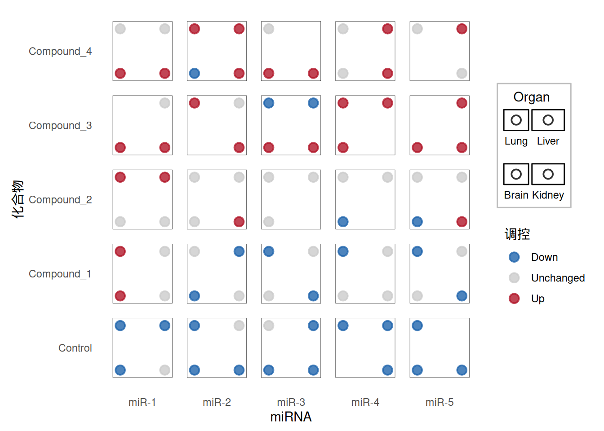
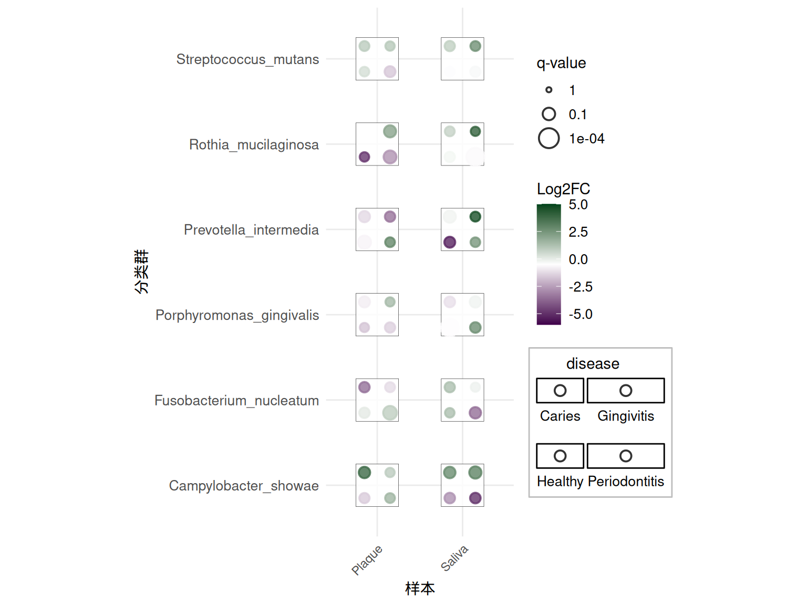
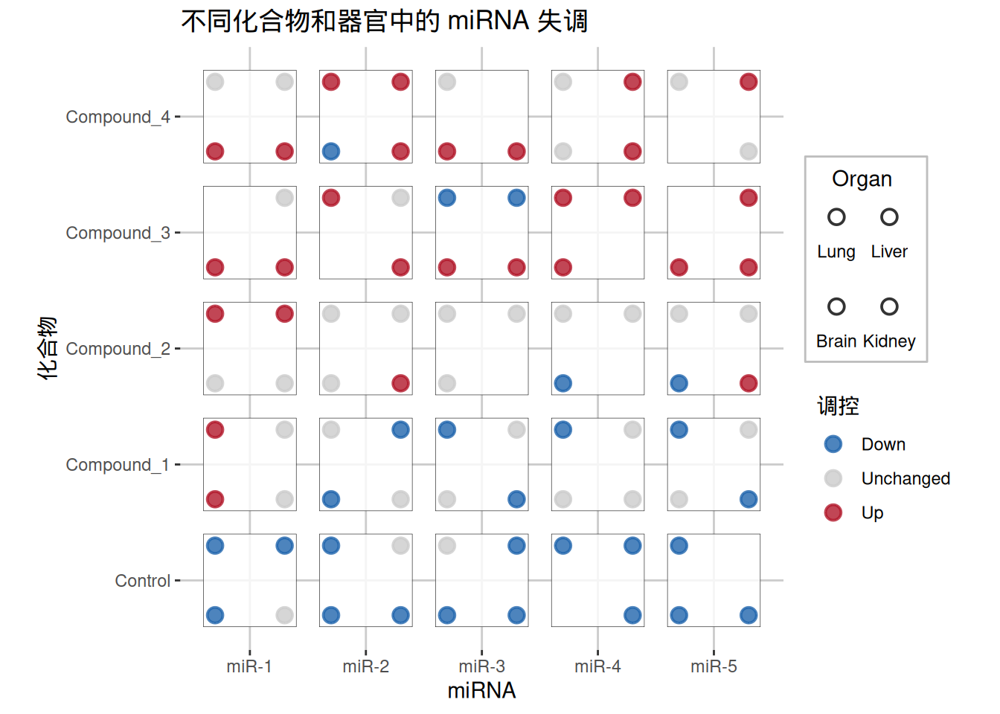

# 安装包
if (!requireNamespace("ggplot2", quietly = TRUE)) {
install.packages("ggplot2")
}
if (!requireNamespace("ggdiceplot", quietly = TRUE)) {
install.packages("ggdiceplot")
}
if (!requireNamespace("dplyr", quietly = TRUE)) {
install.packages("dplyr")
}
# 加载包
library(ggplot2)
library(ggdiceplot)
library(dplyr)骰子图
骰子图是一种用于表示高维分类数据的可视化技术。ggdiceplot 包提供了 ggplot2 扩展，用于创建基于骰子的可视化，其中骰子上的每个点位置代表一个特定的分类变量。这允许使用传统的骰子模式同时直观地可视化多达 6 个分类变量。每个骰子位置（1-6）代表不同的类别，仅当该类别存在时才显示点。
示例

该骰子图显示了不同化合物和器官中 miRNA 表达变化。每个骰子表示 miRNA 在不同器官（肺、肝脏、大脑）中的存在和调控方向。点代表不同的器官，颜色表示 miRNA 是上调（红色）、下调（蓝色）还是不变（灰色）。
环境配置
系统要求：跨平台（Linux/MacOS/Windows）
编程语言：R
依赖包：
ggplot2;ggdiceplot;dplyr
sessioninfo::session_info("attached")─ Session info ───────────────────────────────────────────────────────────────
setting value
version R version 4.5.2 (2025-10-31)
os Ubuntu 24.04.3 LTS
system x86_64, linux-gnu
ui X11
language (EN)
collate C.UTF-8
ctype C.UTF-8
tz UTC
date 2025-12-24
pandoc 3.1.3 @ /usr/bin/ (via rmarkdown)
quarto 1.8.26 @ /usr/local/bin/quarto
─ Packages ───────────────────────────────────────────────────────────────────
package * version date (UTC) lib source
dplyr * 1.1.4 2023-11-17 [1] RSPM
ggdiceplot * 1.0.1 2025-12-08 [1] RSPM
ggplot2 * 4.0.1 2025-11-14 [1] RSPM
[1] /home/runner/work/_temp/Library
[2] /opt/R/4.5.2/lib/R/site-library
[3] /opt/R/4.5.2/lib/R/library
* ── Packages attached to the search path.
──────────────────────────────────────────────────────────────────────────────数据准备
该包包含用于演示骰子图功能的示例数据。我们将使用 miRNA 失调数据集，其中包含有关不同化合物和器官中 microRNA 表达变化的信息。
# 从包中加载示例数据
data("sample_dice_miRNA", package = "ggdiceplot")
df_dice <- sample_dice_miRNA
# 查看数据结构
head(df_dice) miRNA Compound Organ log2FC direction
1 miR-1 Control Lung -1.4483805 Down
2 miR-2 Control Lung -1.1841420 Down
3 miR-3 Control Lung 0.2469667 Unchanged
4 miR-4 Control Lung -0.9435933 Down
5 miR-5 Control Lung -0.8965698 Down
6 miR-1 Compound_1 Lung 0.8720520 Up# 检查数据维度
str(df_dice)'data.frame': 90 obs. of 5 variables:
$ miRNA : Factor w/ 5 levels "miR-1","miR-2",..: 1 2 3 4 5 1 2 3 4 5 ...
$ Compound : Factor w/ 5 levels "Control","Compound_1",..: 1 1 1 1 1 2 2 2 2 2 ...
$ Organ : Factor w/ 4 levels "Lung","Liver",..: 1 1 1 1 1 1 1 1 1 1 ...
$ log2FC : num -1.448 -1.184 0.247 -0.944 -0.897 ...
$ direction: Factor w/ 3 levels "Down","Unchanged",..: 1 1 2 1 1 3 2 1 1 1 ...
- attr(*, "out.attrs")=List of 2
..$ dim : Named int [1:3] 5 5 4
.. ..- attr(*, "names")= chr [1:3] "miRNA" "Compound" "Organ"
..$ dimnames:List of 3
.. ..$ miRNA : chr [1:5] "miRNA=miR-1" "miRNA=miR-2" "miRNA=miR-3" "miRNA=miR-4" ...
.. ..$ Compound: chr [1:5] "Compound=Control" "Compound=Compound_1" "Compound=Compound_2" "Compound=Compound_3" ...
.. ..$ Organ : chr [1:4] "Organ=Lung" "Organ=Liver" "Organ=Brain" "Organ=Kidney"该数据集包含以下列： - miRNA：microRNA 标识符 - Compound：治疗化合物 - Organ：组织/器官类型 - log2FC：表达的 log2 倍数变化 - direction：调控方向（上调/下调/不变）
可视化
1. 基础骰子图
基础骰子图使用 geom_dice() 来表示多个分类变量。每个骰子方块可以使用传统的骰子点模式显示多达 6 个类别。
提示
关键参数：
-
dots：映射到骰子位置的变量（1-6 个点） -
fill：骰子背景的颜色映射 -
width和height：控制每个骰子方块的大小 -
ndots：要显示的唯一类别数
# 定义调控方向的颜色
direction_colors <- c(
Down = "#2166ac",
Unchanged = "grey80",
Up = "#b2182b"
)
# 创建基础骰子图
p1 <- ggplot(df_dice, aes(x = miRNA, y = Compound)) +
geom_dice(
aes(
dots = Organ,
fill = direction,
width = 0.8,
height = 0.8
),
show.legend = TRUE,
ndots = length(levels(df_dice$Organ)),
x_length = length(levels(df_dice$miRNA)),
y_length = length(levels(df_dice$Compound))
) +
scale_fill_manual(values = direction_colors, name = "调控") +
theme_minimal() +
theme(
axis.text.x = element_text(angle = 0, hjust = 0.5),
axis.text.y = element_text(hjust = 1),
panel.grid = element_blank()
) +
labs(
x = "miRNA",
y = "化合物"
)
p1

每个骰子显示 miRNA 在不同器官中的存在和调控方向。点代表不同的器官（肺、肝脏、大脑），颜色表示 miRNA 是上调（红色）、下调（蓝色）还是不变（灰色）。
2. 具有连续变量的高级骰子图
骰子图还可以使用大小和颜色渐变来合并连续变量。这对于显示效应大小和统计显著性特别有用。
# 加载分类学示例数据
data("sample_dice_data1", package = "ggdiceplot")
toy_data <- sample_dice_data1
# 查看数据
head(toy_data) taxon disease specimen lfc q
1 Campylobacter_showae Caries Saliva 2.74 0.17
2 Porphyromonas_gingivalis Caries Saliva -1.13 0.26
3 Rothia_mucilaginosa Caries Saliva 0.73 0.37
4 Fusobacterium_nucleatum Caries Saliva 1.27 0.31
5 Streptococcus_mutans Caries Saliva 0.81 0.31
6 Prevotella_intermedia Caries Saliva -0.21 0.11
提示
高级参数：
-
size：映射到连续变量（例如，-log10(q-value)） -
fill：可以使用渐变尺度表示连续效应大小 -
scale_fill_gradient2()：为正/负效应创建发散颜色尺度
# 计算尺度参数
lo <- floor(min(toy_data$lfc, na.rm = TRUE))
up <- ceiling(max(toy_data$lfc, na.rm = TRUE))
mid <- (lo + up) / 2
minsize <- floor(min(-log10(toy_data$q), na.rm = TRUE))
maxsize <- ceiling(max(-log10(toy_data$q), na.rm = TRUE))
midsize <- ceiling(quantile(-log10(toy_data$q), c(0.5), na.rm = TRUE))
# 创建高级骰子图
p2 <- ggplot(toy_data, aes(x = specimen, y = taxon)) +
geom_dice(
aes(
dots = disease,
fill = lfc,
size = -log10(q),
width = 0.5,
height = 0.5
),
show.legend = TRUE,
ndots = length(unique(toy_data$disease)),
x_length = length(unique(toy_data$specimen)),
y_length = length(unique(toy_data$taxon))
) +
scale_fill_gradient2(
low = "#40004B",
high = "#00441B",
mid = "white",
na.value = "white",
limit = c(lo, up),
midpoint = mid,
name = "Log2FC"
) +
scale_size_continuous(
limits = c(minsize, maxsize),
breaks = c(minsize, midsize, maxsize),
labels = c(10^minsize, 10^-midsize, 10^-maxsize),
name = "q-value"
) +
theme_minimal() +
theme(
axis.text.x = element_text(angle = 45, hjust = 1),
axis.text.y = element_text(size = 10),
legend.text = element_text(size = 10)
) +
labs(
x = "样本",
y = "分类群"
)
p2

该高级图显示分类学数据，其中： - 点：不同疾病 - 颜色：Log2 倍数变化（紫色 = 下调，绿色 = 上调） - 大小：统计显著性（-log10 q-value）
3. 自定义主题
该包包含 theme_dice() 以实现更清晰的可视化：
# 使用 theme_dice() 创建骰子图
p3 <- ggplot(df_dice, aes(x = miRNA, y = Compound)) +
geom_dice(
aes(
dots = Organ,
fill = direction,
width = 0.8,
height = 0.8
),
show.legend = TRUE,
ndots = length(levels(df_dice$Organ)),
x_length = length(levels(df_dice$miRNA)),
y_length = length(levels(df_dice$Compound))
) +
scale_fill_manual(values = direction_colors, name = "调控") +
theme_dice() +
labs(
title = "不同化合物和器官中的 miRNA 失调",
x = "miRNA",
y = "化合物"
)
p3

theme_dice() 提供了一个针对骰子图优化的简洁主题，具有清晰的背景和适当的间距。
应用
骰子图在生物医学研究中特别有用，用于可视化复杂的分类关系。它们已应用于各个领域，包括基因组学、转录组学和临床研究。
1. 基因表达分析

该图显示了多种疾病（MS、AD、ASD、FTD、HD）和细胞类型中差异表达基因的多米诺图。每个骰子表示： - 点：不同疾病条件 - 颜色：Log 倍数变化（蓝色 = 下调，红色 = 上调） - 大小：统计显著性（FDR）
多米诺图允许同时可视化多个维度的基因表达模式，使识别疾病特异性和细胞类型特异性失调模式变得容易。
2. 分类学分析

该应用演示了骰子图如何可视化样本和疾病中的分类学丰度数据，每个点代表不同的疾病状态，颜色/大小表示效应大小和显著性水平。
3. miRNA 失调研究
该示例显示了不同化合物和器官中 miRNA 表达变化，骰子点代表器官，颜色表示调控方向。这种可视化模式对于检查组织特异性药物效应的药理学研究特别有用。
参考文献
M. Flotho, P. Flotho, A. Keller, “Diceplot: A package for high dimensional categorical data visualization,” arXiv preprint, 2024. https://doi.org/10.48550/arXiv.2410.23897
ggdiceplot GitHub 仓库：https://github.com/maflot/ggdiceplot
ggdiceplot CRAN 包：https://CRAN.R-project.org/package=ggdiceplot
贡献者
- 编辑：GitHub Copilot。